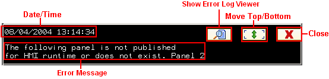
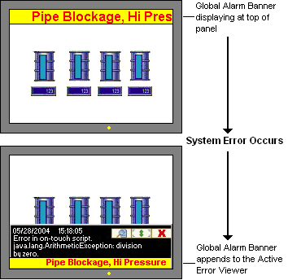

|
|
|
|
|
|
|
|
When a system error occurs at run-time, the Active Error Viewer appears and displays a message that describes the error.
In regular conditions, the Active Error Viewer appears at the base of the panel on top of all objects and all popup windows, and continues displaying even after a panel change operation. The Active Error Viewer closes when the user acknowledges the error by pressing the close button. If the system error returns to normal while the Active Error Viewer is displaying it, the Active Error Viewer will automatically close.
Be aware that in special conditions the Active Error Viewer behaves differently. See the Section below, Active Error Viewer's Conditional Behavior, for a list of the Active Error Viewer's behavior during special conditions.

Date, Time: The date and time the system error occurred. The time displayed is based on Greenwich Mean Time (GMT) offset by the Time Zone and Time Adjustment (Daylight Saving Time) settings of the target machine. You must set the Time Zone and Time Adjustment properly to log errors at the correct time. For more information, see Section 4.5.3, Displaying Data Using Time Zone and Configuring Daylight Saving Time.
Show System Error Log Viewer: Displays the System Error Log Viewer.
Close: Closes the Active Error Viewer if there is only one error message. If there is more than one error message, when you click Close the next error message displays in the Active Error Viewer.
Move Top/Bottom: Moves the Active Error Viewer to either the top or the bottom of the panel. This button does not display on targets with a 200x80 panel size.
Error Message: The system error message. See Section 28.2.4.1, Run-time Event Messages, for a list of system error messages, descriptions on each message, and information on how to resolve the system error.
The list below describes the Active Error Viewer's behavior during special conditions.
Error Log Viewer and Active Error Viewer display at the same time:
If a system error occurs while the Error Log Viewer is displaying, the Active Error Viewer does not appear. In this case, the error message appears as the top message in the Error Log Viewer.
Popup Keypad and the Active Error Viewer display at the same time:
If a popup keypad appears while the Active Error Viewer is displaying, the Show Error Log Viewer icon is disabled. The Move Top/Bottom icon and the Close icon are still enabled. Once the popup keypad closes, icon operations return to normal.
Global Alarm Banner and the Active Error Viewer display at the same time:
If the Global Alarm Banner and the Active Error Viewer display at the same time, no matter where the Global Alarm Banner is positioned (top, middle, or bottom), the Global Alarm Banner appends to the base of the Active Error Viewer. This ensures that both the system error message and the alarm message are always visible to the user.

When the Global Alarm Banner appends to the Active Error Viewer, the Global Alarm Banner's font size converts to 16 points. This is a fixed value, so if the Alarm Banner's font size is originally smaller or larger than 16 points, the font still converts to 16 points. The Alarm Banner's font type, style, color, and scroll rate remain the same.
Once the Active Error Viewer closes, the Global Alarm Banner returns to displaying as defined in the Target properties.
System errors occur while the Active Error Viewer is displaying:
When multiple system errors occur, the error with the highest priority displays in the Active Error Viewer. When you click the Close button, the next error message with the highest priority displays. If error messages with the same priority occur, the most recent error message displays. See Section 28.2.4.1, Run-time Event Messages, for a list of messages and their priorities.